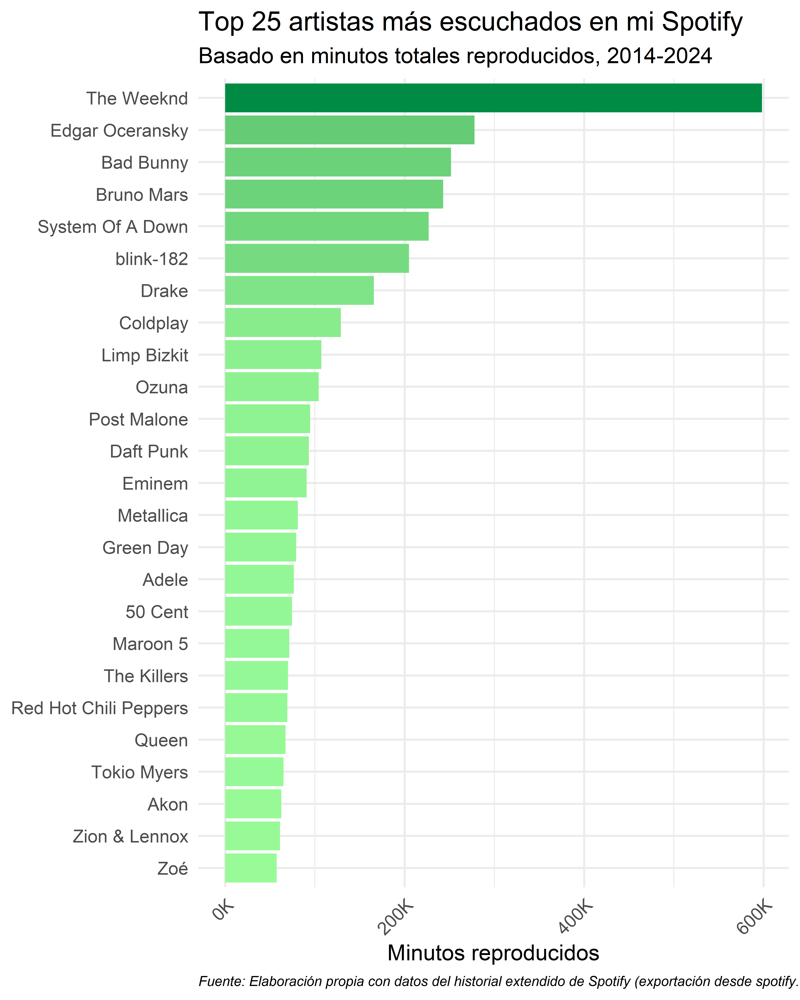

# Paquetes requeridos.
pacman::p_load(jsonlite, lubridate, tidyverse, knitr, ggplot2, plotly, purrr, tidytext)
# Quitar notación científica.
options(scipen = 999)
# Limpiar ambiente.
rm(list = ls())Introducción
En cada momento del día, semana, mes y año, millones de reproducciones se realizan a través de las distintas plataformas digitales como Apple Music, Deezer, Pandora, Youtube, SoundCloud, Google Play Music, Amazon Music y Spotify. Sin embargo, a pesar de las múltiples plataformas que existen, la plataforma que lidera el mercado de audio en streaming sigue siendo Spotify.
En esta entrada de blog, que retomo después de poco más de 2 años, visualizaremos distinta información que podemos pedir a través de la página de Spotify y que requiere de ciertos días para su recolección y envío hacia el correo electrónico registrado en la cuenta de Spotify.
En lo personal, requerí a Spotify la base de datos donde se esboza el historial de reproducción extendido de toda la vida útil de la cuenta. Cabe recordar que para tener disponible esta información, se requiere de un tiempo de espera de \(\approx\) 30 días.
Para solicitar esta información, hay que dirigirse al apartado de Privacidad de la Cuenta una vez que se haya iniciado sesión en la página de Spotify y seguir a la sección Descarga tus datos para poder pedir la información.
Paquetería
Estos serán los paquetes que se utilizarán a lo largo de este trabajo.
Importando y editando datos
En mi caso, el historial extendido consta de 7 diferentes archivos que desconozco cuál es la manera en que se basan para integrar qué información en cada archivo. En esta base de datos se puede visualizar información básica con relación al momento exacto en que finalizó la reproducción, nombre del artista o creador (en caso de ser podcast), título de la canción o podcast, capítulo del podcast, álbum del artista y los milisegundos que se reprodujo la canción o podcast.
De manera general, la información utilizada para este ejercicio comprende del 28 de abril de 2014 al 6 de noviembre de 2024.
Para importar la información, generé un vector con cada dirección de ruta de los archivos (no se mostró por privacidad), y se importaron de la siguiente forma:
# Leer todos los archivos y unirlos
historial_spotify <- rutas |>
map(fromJSON) |>
bind_rows()Una vez importada la información en su forma agregada se realizaron algunos ajustes para el objetivo de esta entrada de blog: se le dio formato de fecha, se añadió una variable con los minutos reproducidos y se creó una variable con fecha (sin hora). De esta forma, el análisis se vuelve menos complejo y se puede visualizar la actividad por año, mes, semana o día.
# Convertir la columna 'ts' a clase POSIXct (fecha-hora legible)
historial_spotify <- historial_spotify |>
mutate(ts = ymd_hms(ts, tz = "UTC"))
# Añadir minutos reproducidos.
historial_spotify <- historial_spotify |>
mutate(min_played = ms_played / 1000 / 60)
# Crear columna de fecha (sin hora)
historial_spotify <- historial_spotify |>
mutate(fecha = as_date(ts))Actividad semanal
Para la primera gráfica, se muestra la actividad semanal, creando una columna denominada “horas” para alojar la información del contenido escuchado por semana. En Figure 1 se puede observar que mi actividad más alta fue durante las semanas de los años 2022 y 2023 y que, por alguna razón, cuando comencé a utilizar Spotify en el 2014, al poco tiempo dejé de escuchar canciones hasta mediados de 2015.
# Agrupar por semana y sumar horas reproducidas
act_semanal <- historial_spotify |>
group_by(semana = floor_date(fecha, unit = "week")) |>
summarise(horas = sum(min_played) / 60, .groups = "drop")
# Graficar
act_semanal |>
ggplot(aes(x = semana, y = horas)) +
geom_col(aes(fill = horas), show.legend = FALSE) +
scale_fill_gradient(low = "#98FB98", high = "#008B45") +
scale_x_date(
date_breaks = "1 year",
date_labels = "%Y",
expand = expansion(mult = c(0, 0.01))
) +
scale_y_continuous(labels = scales::label_comma()) +
labs(
title = "¿En qué semana escuché más contenido en Spotify?",
subtitle = "Actividad por semana, 2014-2024",
x = NULL,
y = "Horas reproducidas",
caption = "Fuente: Elaboración propia con datos del historial extendido de Spotify (exportación desde spotify.com/account/privacy)"
) +
theme_classic(base_size = 15) +
theme(
legend.position = "top",
plot.caption = element_text(hjust = 0, face = "italic", size = 9)
)Actividad anual
Ahora bien, debido a que las columnas de la anterior gráfica (Figure 1) pudieran generar alguna incomodidad debido a su confusa visualización, se genera una gráfica de proporciones similares pero con la información agrupada por año.
# Crear columna con los años.
historial_spotify <- historial_spotify |>
mutate(anio = year(ts))
# Agrupar por año y sumar las horas.
act_anual <- historial_spotify |>
group_by(anio) |>
summarise(
horas = sum(min_played, na.rm = TRUE) / 60,
.groups = "drop"
)
# Graficar.
act_anual |>
ggplot(aes(x = factor(anio), y = horas)) +
geom_col(aes(fill = horas), show.legend = FALSE) +
geom_text(
aes(label = round(horas, 0)),
vjust = -0.5,
size = 5
) +
scale_fill_gradient(low = "#98FB98", high = "#008B45") +
scale_y_continuous(labels = scales::label_comma()) +
labs(
title = "¿En qué año escuché más contenido en Spotify?",
subtitle = "Actividad total por año, 2014-2024",
x = "Año",
y = "Horas reproducidas",
caption = "Fuente: Elaboración propia con datos del historial extendido de Spotify (exportación desde spotify.com/account/privacy)"
) +
theme_classic(base_size = 15) +
theme(
legend.position = "top",
plot.caption = element_text(hjust = 0, face = "italic", size = 9)
) +
coord_cartesian(ylim = c(0, max(act_anual$horas) * 1.1)) # Expande un poco el eje Y para que la etiqueta (541) se vea completa.En esta gráfica (Figure 2), se muestra un comportamiento diferente a lo esbozado anteriormente. Por ejemplo, si bien, en la Figure 1 se muestra que en los años 2022-2023 hubo mayores picos de interacción con Spotify de forma semanal, en su perspectiva anual, el año 2023 no figura dentro de los cinco primeros años con mayor interacción, si no que es el año 2018 y después el 2022 junto con el 2016.
División de información
Debido a la benevolencia de la información que brinda columnas para identificar canciones (álbum, track o artista) o podcasts (nombre del podcast o del episodio), se segmentará la información en dos diferentes objetos: songs (debido a que es más corto que escribir “canciones”) y podcasts. Para la primera, se renombraron las variables para un mayor esclarecimiento de la información, como el nombre de la canción, el artista y el álbum. En tanto, para la segunda información (podcasts), se cambió la variable del nombre del podcasts.
# Dividir entre canciones y podcasts.
# Canciones
songs <- historial_spotify |>
select(
timestamp = ts,
min_played,
track_name = master_metadata_track_name,
artist_name = master_metadata_album_artist_name,
album_name = master_metadata_album_album_name
) |>
na.omit()
# Podcasts
podcasts <- historial_spotify |>
select(
timestamp = ts,
min_played,
episode_name,
show_name = episode_show_name
) |>
na.omit()Música
Top 25 artistas histórico
Una vez filtrado la información de los datos históricos extrayendo la información de las canciones escuchadas durante el periodo (2014-2024), se genera una gráfica que muestra los 25 artistas más escuchados en mi historial completo de Spotify.
# Top 25 artistas más escuchados en mi historial.
top25_artistas <- songs |>
group_by(artist_name) |>
summarise(minutos_escuchados = sum(min_played) * 60, .groups = "drop") |>
slice_max(order_by = minutos_escuchados, n = 25) |>
ggplot(aes(
x = reorder(artist_name, minutos_escuchados),
y = minutos_escuchados
)) +
geom_col(aes(fill = minutos_escuchados), show.legend = FALSE) +
scale_fill_gradient(low = "#98FB98", high = "#008B45") +
scale_y_continuous(labels = scales::label_number(scale = 1/1000, suffix = "K")) +
labs(
title = "Top 25 artistas más escuchados en mi Spotify",
subtitle = "Basado en minutos totales reproducidos, 2014-2024",
x = NULL,
y = "Minutos reproducidos",
caption = "Fuente: Elaboración propia con datos del historial extendido de Spotify (exportación desde spotify.com/account/privacy)"
) +
theme_minimal(base_size = 16) +
theme(
axis.text.x = element_text(angle = 45, hjust = 1),
plot.caption = element_text(hjust = 0, face = "italic", size = 10)
) +
coord_flip()
top25_artistas

En esta gráfica (Figure 3) se puede observar que la música de The Weeknd es la que más he escuchado… y por mucho, casi llegando a los 600 mil minutos reproducidos, cerca de \(\approx\) 10 mil horas o alrededor de 415 días. En tanto, entre el rango de 200k-300k minutos reproducidos, se encuentran artistas como Edgar Oceransky, Bad Bunny, Bruno Mars, System of a Down y Blink 182. Asimismo, en el rango de 100k a 200k, hay artistas como Drake, Coldplay, Limp Bizkit y Ozuna, mientras que, debajo de los 100 mil minutos reproducidos, hay una diversidad de artistas como Post Malone, Adele, 50 Cent, Queen y Zoe. Curiosamente solo tres artistas de habla hispana y solo dos de México (Edgar Oceransky y Zoé).
Top 10 artistas por año
Una cuestión que me surgió al estar realizando este tipo de visualizaciones, fue el conocer cómo han cambiado mis gustos musicales a lo largo de este periodo de alrededor de 10 años. Con ello en mente, se esboza el top 10 de artistas por cada año disponible en mi historial de Spotify.
# Top 10 artistas por año.
top10_anual <- songs |>
mutate(anio = lubridate::year(timestamp)) |>
group_by(anio, artist_name) |>
summarise(minutos = sum(min_played) * 60, .groups = "drop") |>
group_by(anio) |>
slice_max(order_by = minutos, n = 10, with_ties = FALSE) |>
ungroup()
ggplot(top10_anual, aes(x = reorder_within(artist_name, minutos, anio), y = minutos)) +
geom_col(aes(fill = minutos), show.legend = FALSE) +
geom_text(
aes(label = scales::label_number(scale = 1/1000, suffix = "K", accuracy = 0.1)(minutos)),
hjust = -0.1,
size = 3.5
) +
facet_wrap(~anio, scales = "free_y") +
scale_x_reordered() +
scale_y_continuous(labels = scales::label_number(scale = 1/1000, suffix = "K")) +
scale_fill_gradient(low = "#98FB98", high = "#008B45") +
labs(
title = "Top 10 artistas más escuchados por año",
subtitle = "Basado en minutos totales reproducidos",
x = NULL,
y = "Minutos reproducidos",
caption = "Fuente: Elaboración propia con datos del historial extendido de Spotify (exportación desde spotify.com/account/privacy)"
) +
theme_minimal(base_size = 14) +
theme(
axis.text.x = element_blank(),
axis.ticks.x = element_blank(),
plot.caption = element_text(hjust = 0, face = "italic", size = 9)
) +
coord_flip(clip = "off")
De esta forma, se observa que a través de los años, los artistas que más escucho han cambiado. Sin embargo, también hay artistas que han permanecido en el mismo periodo Figure 4 .
De la misma manera, también se puede dilucidar que la alta concentración de The Weeknd en Figure 3 fue debido a que en los añlos 2018 y 2020, lo escuché con gran fervor. En 2018 desconozco la razón, pero en 2020 pudiera haber incidido el hecho del lanzamiento de su álbum “After Hours”. Además, en 2021 se mantuvo como mi artista más escuchado a lo mejor por su medianamente interpretación en el Super Bowl LV de la NFL.
Podcasts
Top 25 podcasts histórico
Por otra parte, también se pudo graficar los podcasts que más escuché durante estos años.
top_podcasts_global <- podcasts |>
group_by(show_name) |>
summarise(minutos_reproducidos = sum(min_played) * 60, .groups = "drop") |>
slice_max(order_by = minutos_reproducidos, n = 25)
ggplot(top_podcasts_global, aes(
x = reorder(show_name, minutos_reproducidos),
y = minutos_reproducidos
)) +
geom_col(aes(fill = minutos_reproducidos), show.legend = FALSE) +
geom_text(
aes(label = scales::label_number(scale = 1/1000, suffix = "K", accuracy = 1)(minutos_reproducidos)),
hjust = -0.1,
size = 3.5
) +
scale_y_continuous(labels = scales::label_number(scale = 1/1000, suffix = "K")) +
scale_fill_gradient(low = "#98FB98", high = "#008B45") +
labs(
title = "Top 25 podcasts más escuchados en Spotify",
subtitle = "Basado en minutos totales reproducidos, 2014-2024",
x = NULL,
y = "Minutos reproducidos",
caption = "Fuente: Elaboración propia con datos del historial extendido de Spotify (exportación desde spotify.com/account/privacy)"
) +
theme_minimal(base_size = 16) +
theme(
axis.text.x = element_text(angle = 45, hjust = 1),
plot.caption = element_text(hjust = 0, face = "italic", size = 10)
) +
coord_flip(clip = "off")
Como se puede observar (Figure 5), una forma de mantenerme informado es a través de la reproducción de podcasts informativos, mientras que mi formación académica como economista y financiero, hacen que se genere con mayor frecuencia, contenidos con esa temática. Uno de los podcasts que más escuché ha sido el de Money Talks (que ya ha sido cancelado), así como el segundo lugar Peras y manzanas, donde Valeria Moy aborda temas de coyuntura económica y financiera con un lenguaje sencillo.
Asimismo, el deporte es algo de lo que me gusta estar al tanto, sobre todo de fútbol americano y Fórmula 1, esto a través del podcast de Quique Garay y Fórmula Latina. El primero, es un espacio (ya extinto) cuyo contenido es referente al fútbol y Olímpicos a través de historias curiosas e interesantes que son relatadas por Alberto Lati que lo hacen sumamente agradable al oído.
Por otra parte, existen destellos de contenido humorístico como Los Manríquez, Otro Rollo o Leyendas Legendarias, sin embargo, en lo personal, la plataforma más adecuada para observar este tipo de contenido es a través de otras plataformas, como Youtube. Mientras que, para Otro Rollo, fue un maratón nostálgico que hizo aparecer este contenido entre los artistas más reproducidos.
Top 10 podcast por año
top10_podcasts_anual <- podcasts |>
mutate(anio = lubridate::year(timestamp)) |>
group_by(anio, show_name) |>
summarise(minutos = sum(min_played) * 60, .groups = "drop") |>
group_by(anio) |>
slice_max(order_by = minutos, n = 10, with_ties = FALSE) |>
ungroup()
ggplot(top10_podcasts_anual, aes(x = reorder_within(show_name, minutos, anio), y = minutos)) +
geom_col(aes(fill = minutos), show.legend = FALSE) +
geom_text(
aes(label = scales::label_number(scale = 1/1000, suffix = "K", accuracy = 1)(minutos)),
hjust = -0.1,
size = 3.5
) +
facet_wrap(~anio, scales = "free_y") +
scale_x_reordered() +
scale_y_continuous(labels = scales::label_number(scale = 1/1000, suffix = "K")) +
scale_fill_gradient(low = "#98FB98", high = "#008B45") +
labs(
title = "Top 10 podcasts más escuchados por año",
subtitle = "Basado en minutos totales reproducidos, 2014-2024",
x = NULL,
y = "Minutos reproducidos",
caption = "Fuente: Elaboración propia con datos del historial extendido de Spotify (exportación desde spotify.com/account/privacy)"
) +
theme_minimal(base_size = 14) +
theme(
axis.text.x = element_text(angle = 45, hjust = 1),
plot.caption = element_text(hjust = 0, face = "italic", size = 9)
) +
coord_flip(clip = "on")
En un inicio Figure 6, al haber poca diversidad de contenido económico o financiero, solamente escuchaba Peras y manzanas de Valeria Moy, sin embargo, conforme se fue diversificando y difundiendo más contenido, mi catálogo de podcasts fue variando de tema. No obstante, el contenido económico y/o financiero permaneció constante.
Asimismo, estoy notando que dejé de escuchar podcasts que son muy interesantes, como Econokafka y Escándalo Mexicano.
Actividad por día y hora
Histórico
Otra forma de observar la información es a través de una gráfica de calor donde se muestre el día y la hora en que más escuché contenido en Spotify (Figure 7).
historial_spotify <- historial_spotify |>
mutate(
ts = lubridate::ymd_hms(ts, tz = "UTC"),
timestamp = ts # crear columna nueva con nombre estándar si gustas
)
historial_spotify <- historial_spotify |>
mutate(timestamp = lubridate::ymd_hms(timestamp, tz = "UTC"))
actividad_total <- historial_spotify |>
mutate(
fecha = as_date(timestamp),
hora = hour(timestamp),
dia = wday(fecha, label = TRUE, abbr = FALSE)
) |>
group_by(fecha, hora, dia) |>
summarise(min_escuchados = sum(min_played), .groups = "drop") |>
group_by(hora, dia) |>
summarise(min_totales = sum(min_escuchados), .groups = "drop")
ggplot(actividad_total, aes(dia, hora, fill = min_totales)) +
geom_tile(color = "white") +
scale_fill_gradient(
low = "#00FF7F",
high = "#008B45",
labels = scales::label_comma()
) +
scale_y_continuous(trans = "reverse") +
labs(
title = "¿Cuándo hubo mayor actividad en mi Spotify?",
subtitle = "Actividad por día y hora en todo el historial",
x = NULL,
y = "Hora (24h)",
fill = "Minutos reproducidos",
caption = "Fuente: Elaboración propia con datos del historial extendido de Spotify (exportación desde spotify.com/account/privacy)"
) +
coord_fixed(ratio = 0.3) +
theme_minimal(base_size = 15) +
theme(
plot.caption = element_text(hjust = 0, face = "italic", size = 9)
)
En esta visualización (Figure 7), se concluye que, de forma generalizada, mi actividad en Spotify es durante las tardes y cierta parte, en las madrugadas. Específicamente durante las madrugadas de los martes, jueves y sábados; así como las tardes de los domingos y miércoles con mayor frecuencia.
Música
En tanto, respecto al contenido musical reproducido por día y hora (Figure 8), hay una mayor frecuencia durante algunas madrugadas, mediodías y tardes-noches.
actividad_songs <- songs |>
mutate(
fecha = as_date(timestamp),
hora = hour(timestamp),
dia = wday(fecha, label = TRUE, abbr = FALSE)
) |>
group_by(fecha, hora, dia) |>
summarise(min_escuchados = sum(min_played), .groups = "drop") |>
group_by(hora, dia) |>
summarise(min_totales = sum(min_escuchados), .groups = "drop")
ggplot(actividad_songs, aes(dia, hora, fill = min_totales)) +
geom_tile(color = "white") +
scale_fill_gradient(low = "#98FB98",
high = "#008B45",
labels = scales::label_comma()) +
scale_y_continuous(trans = "reverse") +
labs(
title = "¿Cuándo escuché más música?",
subtitle = "Actividad musical por día y hora",
x = NULL,
y = "Hora (24h)",
fill = "Minutos reproducidos",
caption = "Fuente: Elaboración propia con datos del historial extendido de Spotify (exportación desde spotify.com/account/privacy)"
) +
coord_fixed(ratio = 0.3) +
theme_minimal(base_size = 15) +
theme(
plot.caption = element_text(hjust = 0, face = "italic", size = 9)
)
Podcasts
Respecto al contenido informativo o cómico (Figure 9), la reproducción de este contenido se concentra más entre las tardes de 15h a 20h de martes a viernes. Y ligeramente algunas madrugadas de viernes y sábado.
actividad_podcasts <- podcasts |>
mutate(
fecha = as_date(timestamp),
hora = hour(timestamp),
dia = wday(fecha, label = TRUE, abbr = FALSE)
) |>
group_by(fecha, hora, dia) |>
summarise(min_escuchados = sum(min_played), .groups = "drop") |>
group_by(hora, dia) |>
summarise(min_totales = sum(min_escuchados), .groups = "drop")
ggplot(actividad_podcasts, aes(dia, hora, fill = min_totales)) +
geom_tile(color = "white") +
scale_fill_gradient(low = "#98FB98",
high = "#008B45",
labels = scales::label_comma()) +
scale_y_continuous(trans = "reverse") +
labs(
title = "¿Cuándo escuché más podcasts?",
subtitle = "Actividad por día y hora en contenido hablado",
x = NULL,
y = "Hora (24h)",
fill = "Minutos reproducidos",
caption = "Fuente: Elaboración propia con datos del historial extendido de Spotify (exportación desde spotify.com/account/privacy)"
) +
coord_fixed(ratio = 0.3) +
theme_minimal(base_size = 15) +
theme(
plot.caption = element_text(hjust = 0, face = "italic", size = 9)
)
Conclusión
Explorar mi historial extendido de Spotify ha sido más que un ejercicio técnico, fue una forma de redescubrir mis hábitos, gustos y momentos marcados por la música y los podcasts. A través de estas visualizaciones, no solo observé patrones o tendencias acerca de lo que escucho, también entendí cómo ha evolucionado mi consumo de contenido sonoro a lo largo del tiempo.
Los datos no mienten: hay etapas más intensas, artistas que han sido compañía constante y otros que marcaron solo un instante. Incluso los horarios y días favoritos para escuchar revelan detalles que, sin los datos, pasarían desapercibidos.
Esta experiencia demuestra el poder de visualizar información personal. Con unas cuantos renglones de código, es posible convertir miles de registros en historias visuales significativas.
Pd1. Espero no alejarme en demasía de la visualización de datos y difusión de contenido económico y/o financiero.
Pd2. Ya solicité nuevamente mis datos de Spotify para esbozar una actualización de mi historial extendido.